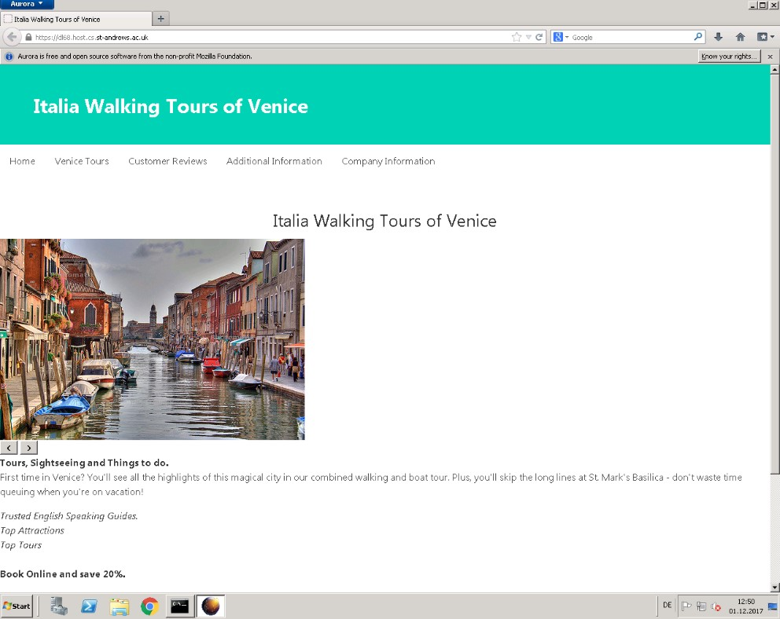

Bulma Website for Testing Functionality
To see full website please click Here
Functionality
This framework makes use of the Flexbox that creates flexibility for the layout of a website making it more usable within different browsers and across different devices. Therefore, this framework is effective in the way it displays the information, appropriately using CSS to make it compatible for different users.
However even though it is hosted online there are options for customization within the CSS code. The code has built into it different colours and different sizes of design for boxes and text which allow the user within the framework to use alternative styles.
The Bulma CSS code can be downloaded for offline manipulation however it is not totally clear where aspects are divided; using parenting and nesting functions to create variations of similar CSS styles, for example “Navbar-is-white, Navbar-is-black”.
In terms of the performance, the different web browsers on desktops appear to display the website correctly. The HTML was tested on the main websites of Chrome and Firefox, including older versions which as you can see function properly. However, when testing with a multiple browser tool there were a few issues with loading the images in time.
Figure 4. Firefox 20 - window 2008 - 01/12/2017
Figure 5. Chrome 62 - Debian - 01/12/2017
The page shrinks proportionally when zooming in or when being displayed on a phone browser, making the navigation bar vertical instead of horizontal in order to be appropriated used by the owner.
Figure 6. iPhone 5 compatibility view on Opera 49 - 01/12/2017
The absence of JavaScript will help with integration onto other systems, the focus on up to date HTML and CSS will improve the ability for the website to function. Therefore, the use of image and video tags will be universally viewable with other systems, whereas if more complex JavaScript was implemented it may lead to potential difficulties.
Usability
In terms of speed the performance was generally good. The gallery images we assigned to be a certain dimension consequently had to be converted, slowing down speeds. The recommendation was to crop the images prior to loading onto to the website, if this was my website we would subsequently do so.
In terms of maintenance keeping the CSS as an online entity makes it more challenging due to not having the code directly in the folder. The ability to only see the code online is difficult when trying to assign HTML to match the CSS values given. Although having it online means that as a user of the framework you assume it is constantly being maintained and updated by the Bulma community to ensure the highest standards.
The file size of the folder containing the framework is approximately 500kb which is extremely reasonable if you wish to have offline customisation. The HTML template provided by Bulma alternatively includes links to websites online, consequently saving space on an offline CSS.
In terms of the learning curve there were many difficulties experienced when trying to implement the Bulma framework to the website. The customization we would say was the biggest difficulty experienced when using the Bulma framework. The ability to manipulate the CSS code offline involves difficulties when understanding which attributes need to be adjusted or matched to be understood by the HTML. These difficulties are compounded with the lack of third-party documentation. There are few sites to help with learning the framework, with a small number of Blogs, YouTube videos and GitHub providing bits of information, however when debugging there is limited information to see where you are going wrong with the main help being within the main website.
The Bulma website has a documentation page that provides information that is helpful for learning how to create websites using its CSS. The documentation website divides the contents into 7 main categories such as form with further subcategories such as input. This documentation website navigation makes it easier to find what you are looking for such as a base code for manipulation (Bulma, 2017). The HTML code when implemented with the CSS looks professional and clear. The customisation and application of HTML code without the templates provided by Bulma make it difficult to use, as discussed previously.
Documentation
In terms of documentation the amount of documentation on Bulma is limited, the most reliable place I found to help with using Bulma was the Bulma website itself, which contains a documentation page for how to use the framework (Bulma, 2017).
In terms of volume, there is limited community support which has been discussed in the learning curve in comparison to some of the main competitors of Bulma include Bootstrap. To further demonstrate the difference in material available the GitHub community has nearly 1000 members for bootstrap in comparison to just over 100 members for Bulma (GitHub, 2017).